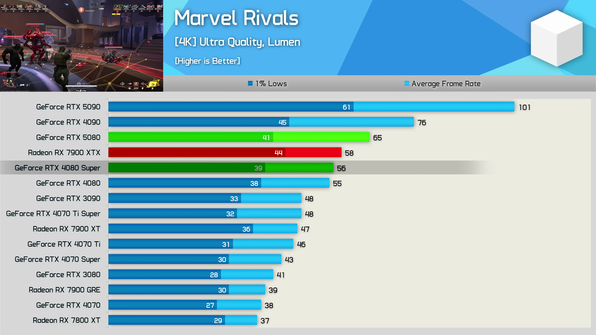
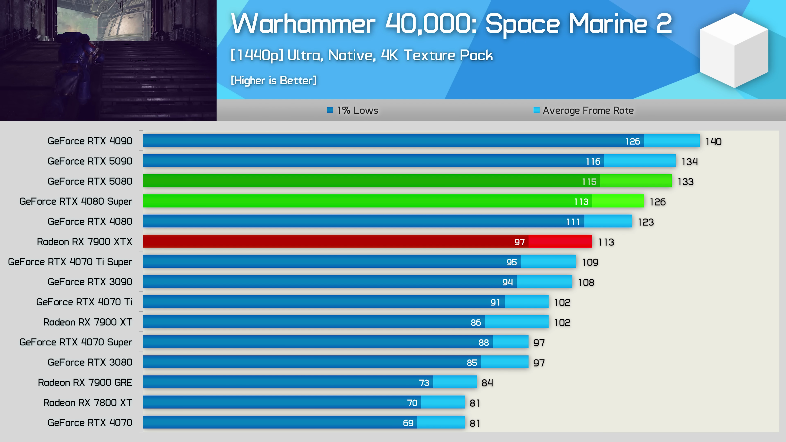
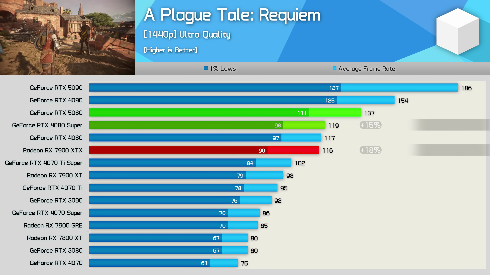
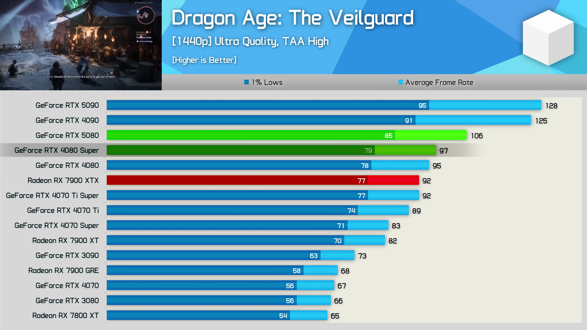
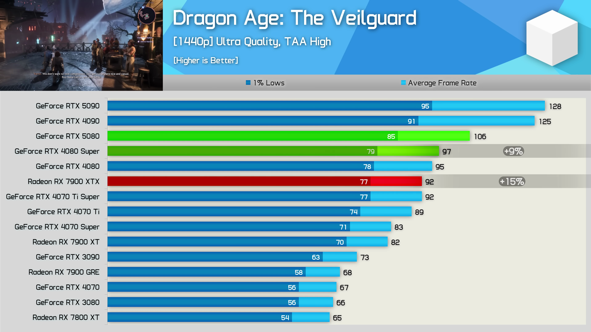
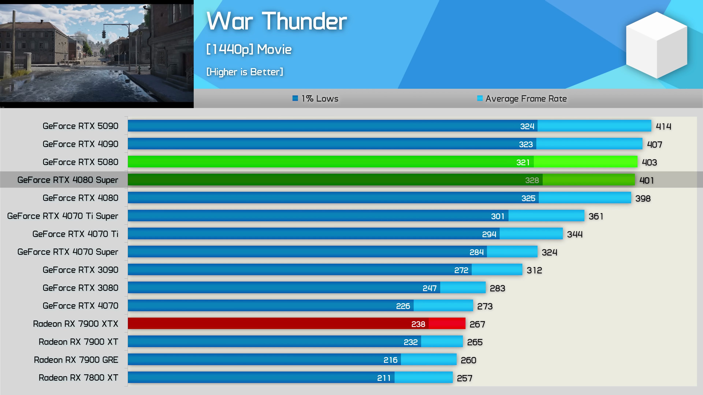

이번 포스트에서는 RTX 5080 Ti에 대한 성능 분석 및 벤치마크 결과를 통해 이 제품이 시장에서 어떤 위치에 있는지를 살펴보겠습니다. 다양한 게임의 프레임 성능을 비교하고, 경쟁 제품들과의 차별점을 찾아보겠습니다. 특히 게이머들이 기대했던 성능 대비 얼마나 실망스러운지를 조명해보고자 합니다. 
게임 성능 분석 - Stalker 2
1440p 해상도에서 Stalker 2의 성능은 그리 인상적이지 않다. RTX 5080은 4080 Super보다 단지 4% 빠를 뿐만 아니라, 7900 XTX보다도 겨우 3% 정도의 차이를 보인다.
- 5080은 4080 Super보다 4% 빠르다.
- 7900 XTX보다 3% 빠른 성능을 보인다.

Counter Strike 2 성능
Counter Strike 2에서는 RTX 5080이 4080 Super보다 4% 느리며, 7900 XTX에 비해 13% 느린 성능을 보여 실망스럽다.
- 5080은 4080 Super보다 4% 느리다.
- 7900 XTX보다 13% 느린 성능이다.

God of War Ragnarok 분석
God of War Ragnarok에서 RTX 5080은 1440p에서 4080 Super보다 겨우 4% 빠르지만, 7900 XTX보다 느리다. 4K 해상도에서는 상황이 조금 나아진다.
- 5080은 4080 Super보다 4% 빠르다.
- 그러나 7900 XTX에는 여전히 느린 성능이다.

Delta Force 성능
Delta Force에서 RTX 5080은 1440p 해상도에서 4080 Super보다 10% 느리며, 4K에서도 여전히 느린 성능이 나타났다.
- 5080은 4080 Super보다 10% 느리다.
- 4K에서도 여전히 느린 성능이다.
Space Marine 2 성능 분석
Space Marine 2에서 RTX 5080은 1440p에서 4080 Super보다 6% 빠르고, 7900 XTX보다 18% 빠른 성능을 보였다.
- 5080은 4080 Super보다 6% 빠르다.
- 7900 XTX에 비해 18% 빠르다.
Cyberpunk 2077 성능
Cyberpunk 2077에서는 1440p 해상도 시 5080이 4080 Super보다 9%, 7900 XTX보다 7% 빠르다.
- 5080은 4080 Super보다 9% 빠르다.
- 7900 XTX보다 7% 빠르다.
Dying Light 2 성능
Dying Light 2에서 RTX 5080은 1440p에서 4080 Super보다 12%, 7900 XTX보다 11% 빠른 성능을 나타냈다.
- 5080은 4080 Super보다 12% 빠르다.
- 7900 XTX보다 11% 빠른 성능을 보인다.
Dragon Age 성능 분석
Dragon Age에서는 RTX 5080이 1440p에서 4080 Super보다 9% 느리지만, 7900 XTX보다 15% 빠른 성능을 보였다.
- 4080 Super보다 9% 느리다.
- 7900 XTX보다 15% 빠르다.
RTX 5080 출시 가격
RTX 5080의 가격이 $1,000 이상이어서는 안되며, 경쟁 제품인 RTX 4080 Super와의 성능 차이가 크지 않기 때문에 더 저렴한 가격이 필요하다.
- MSRP가 현실적이어야 한다.
- 경쟁 제품과 비교해 성능 개선이 미미하다.Tags: #RTX 5080 Ti #성능 분석 #게임 벤치마크 #4080 Super #7900 XTX #GPU 성능 #가격 비교 #전력 소비